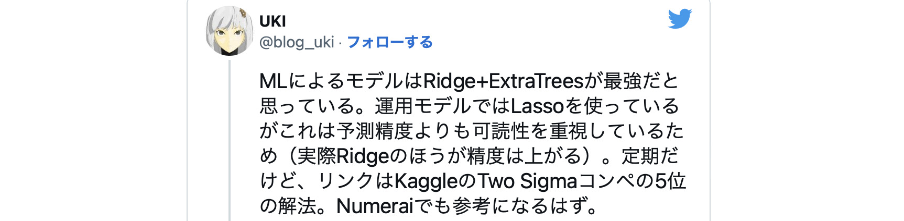
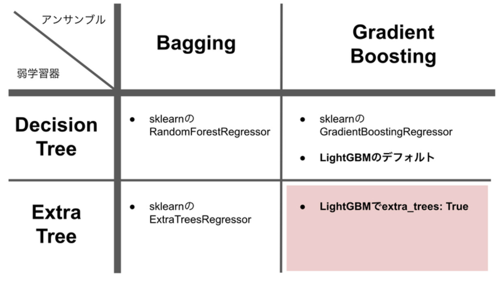
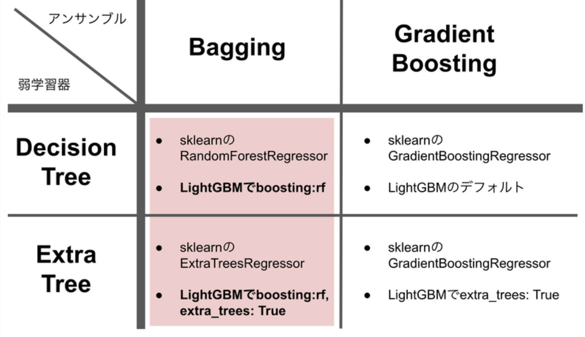

ML botterにオススメなLightGBMのとっておきパラメータ紹介

ML botter向けにLightGBMの少々マニアックなパラメータを紹介します。
-------------------------------------------------------------------------------------------------------------------------------
---TL;DR---
1・LightGBMを使ってる？
“extra_trees”: True がオススメ
2・sklearnのExtraTreesRegressorを使ってる？
“extra_trees”: True, ”boosting”: “rf” のLightGBMもオススメ
この2点について順を追って説明していきます。
-------------------------------------------------------------------------------------------------------------------------------
---Extra Treesって？---
extra treesはrandom forestの変種で、普通のrandom forestよりもっとランダムネスを強くして過学習に対策するものです。random forestは決定木をbaggingで一杯並べたものです。
普通のrandom forestで使われる普通の決定木では、分割をする際、一番良い分割を見つけようということで、各特徴量で一番良い分割の閾値を探します。
extra treesも決定木をbaggingで一杯並べます。ただし、決定木を作っていく際、各特徴量での分割の閾値を、一番良い値を見つけるのではなく、ランダムな値にしちゃいます。これが正則化となり過学習を更に避けられる、という仕組みですね。
もともとextra treesはsklearnで利用可能であり、UKI先生のこんなツイートもあったりと、MLbotterに人気のアルゴリズム

---LightGBMでExtra Treesってどういうこと？---
そんなExtra Treesですが、ちょっと前にLightGBMにもextra_treesというパラメータが入り、LightGBMでもextra treesが使えるようになりました。
LightGBMは決定木を用いたアンサンブル学習のライブラリで、デフォルトではアンサンブル学習としてgradient boostingを行います。なので、extra_treesパラメータをTrueにすると、extra treesでgradient boostingをすることになります。
表にするとこんな感じ

こんな感じで、sklearnのextra treesとはかなり違う機械学習器になります。
baggingの世界でRandomForestRegressorよりExtraTreesRegressorの方が強いんだったら、gradient boostingの世界でもextra_trees: TrueのLightGBMの方が強そうな気がしてきませんか…？
金融データは非常にノイジーでとにかく過学習との戦いであり、決定木系の手法に限らず正則化はかなり強く効かせたいのが常ですよね。
---baggingもLightGBMで？---
ついでなので、LightGBMのboostingというパラメータを紹介します。このパラメータはアンサンブル学習の方法を制御するパラメータで、デフォルトは”gbdt”になっており、gradient boostingが使われます。
一方、boostingを”rf”にすると、baggingを行うこともできます。これとextra_treesパラメータを組み合わせると、以下の表のようになります。

表の中で同じ場所に位置することから分かる通り、大枠として実現できるアルゴリズムはsklearnと同じです。それでもLightGBMを推す理由は以下の通りです。
・LightGBMの方がツリー構築に関して実装されている正則化が多いため、それらを使うことで、精度をより高くできるかもしれない。
・LightGBMのほうが速い。速ければ試行錯誤を増やせる他、ツリーの数を増やして精度も稼げるかもしれない。
個人的には、sklearnのRandomForestRegressorやExtraTreesRegressorを使っているなら、代わりにboosting: rfでのLightGBMの利用もオススメです。
---終わりに---
長々と語りましたが、効果について過剰な期待はしないで下さい。特に勝てなかったストラテジがextra_treesをTrueにするだけで勝てるようになるという程の違いを生むことはまぁまず無いと思います
一方で、LightGBMを使ったbotを既にある程度確立している方であれば、これだけで成績をちょっぴり上げられるケースも結構あるかもしれないのでは？と思います。